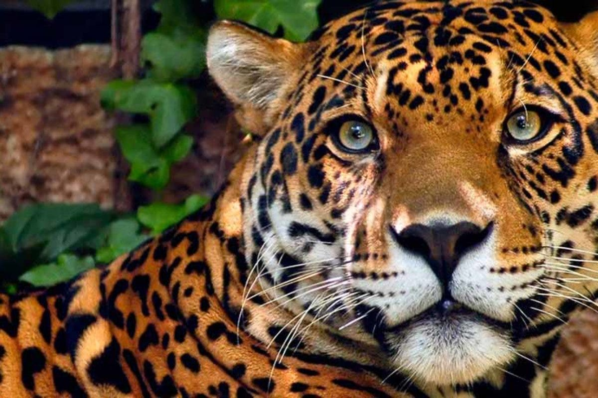
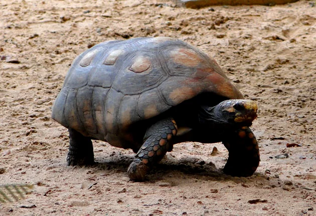
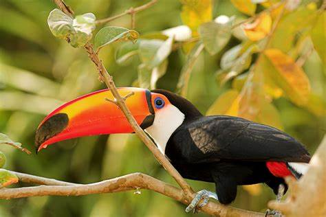
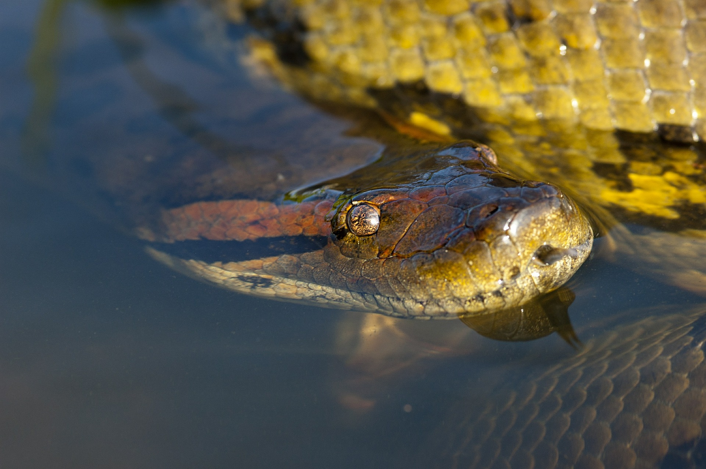
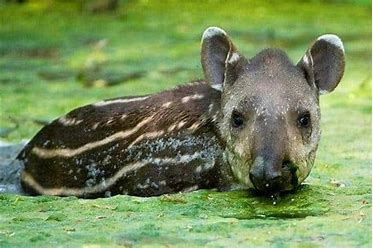

Carnivoros
São seres que consome outros seres vivos para ganhar energia para sobeviver.

onivoro
são seres que consomem tanto outros seres vivos, quanto planta para ganhar energia e sobreviver.
Tucano
Ele come frutas, mas tabém come insetos, cobras, anfibios e pequenos mamiferos mede envolta 52 cm mas pode variar.

Anaconda
Um Carnivoro, rãs e pássaros, porcos selvagens, veados e até gatos da selva, como as onças., ela mede em volta de 5,6 metros de comprimento

Anta
Ela mede de 1,7 metros a 2,0 metros, ela come galhos, gramíneas, plantas aquáticas, cascas de árvores, folhas de palmeiras e também frutos como cajá, jamelão e açaí.
